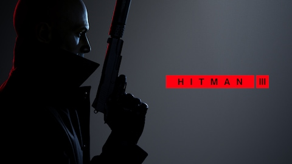 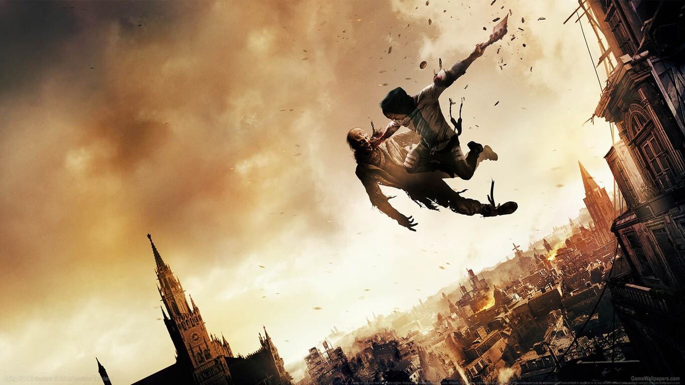
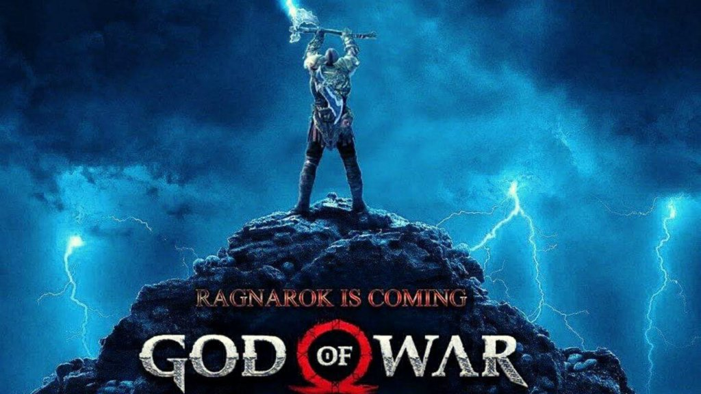 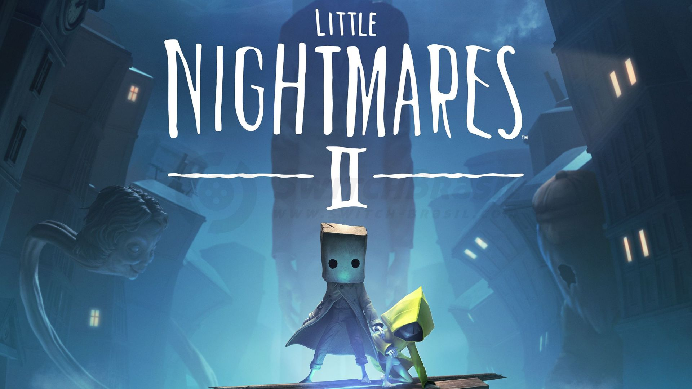
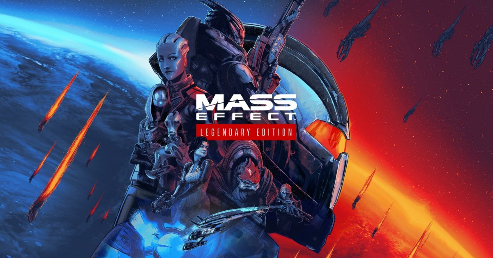
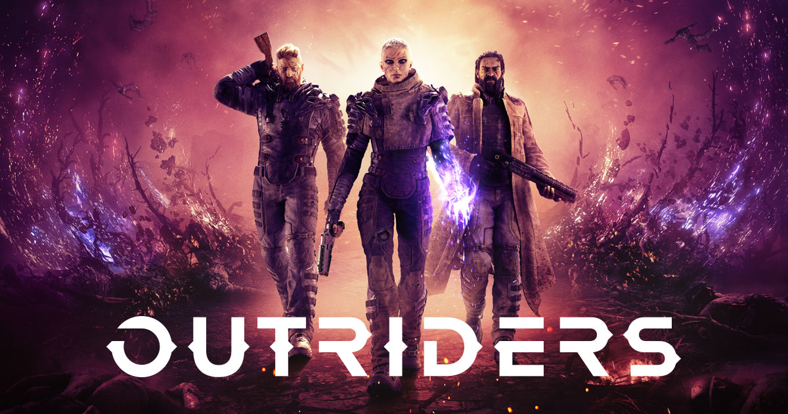
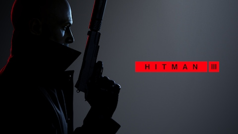 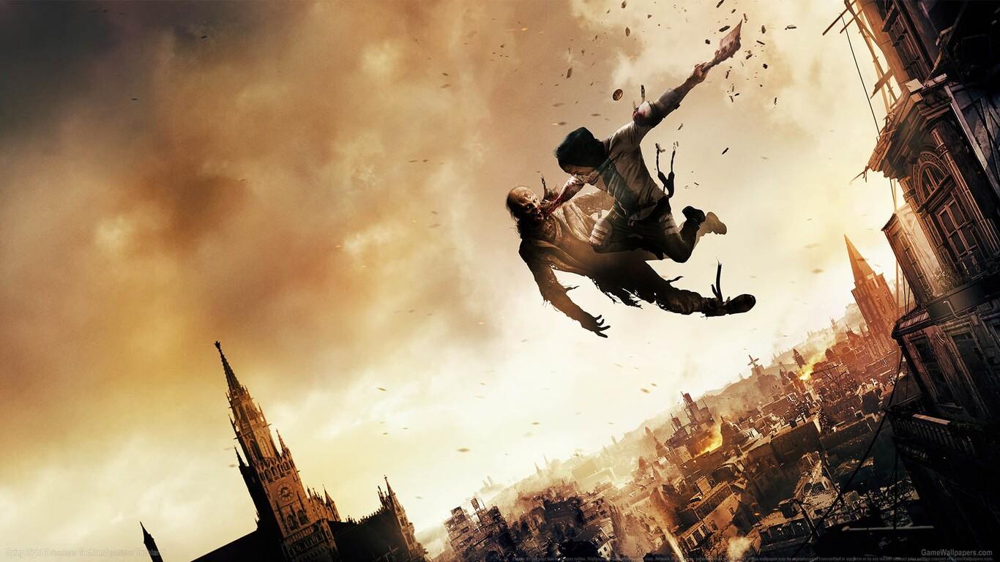
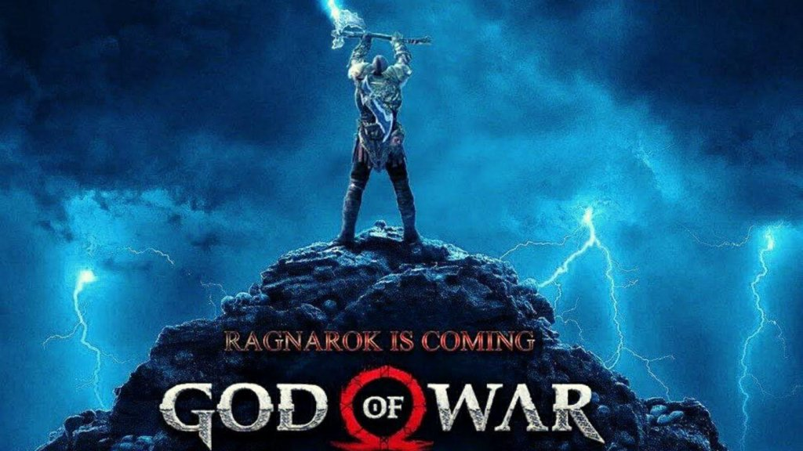 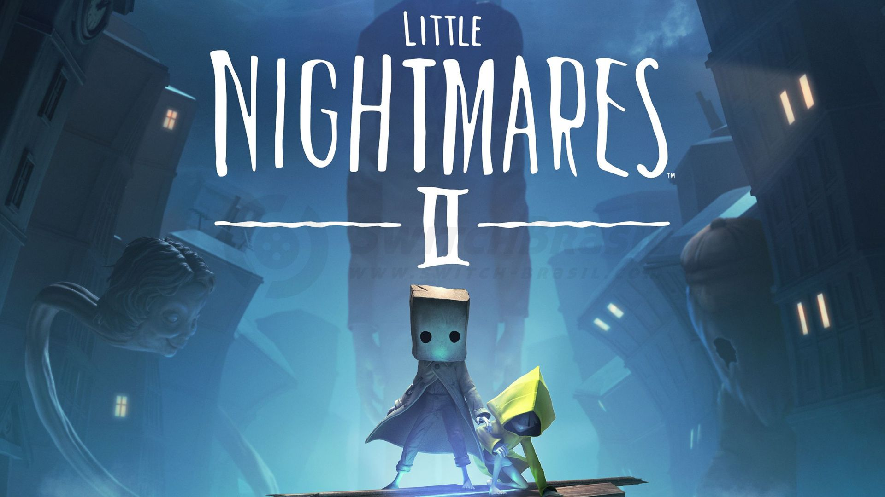
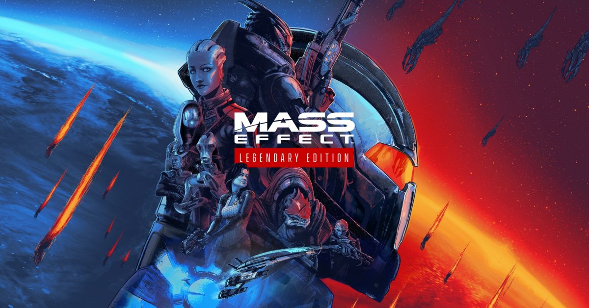
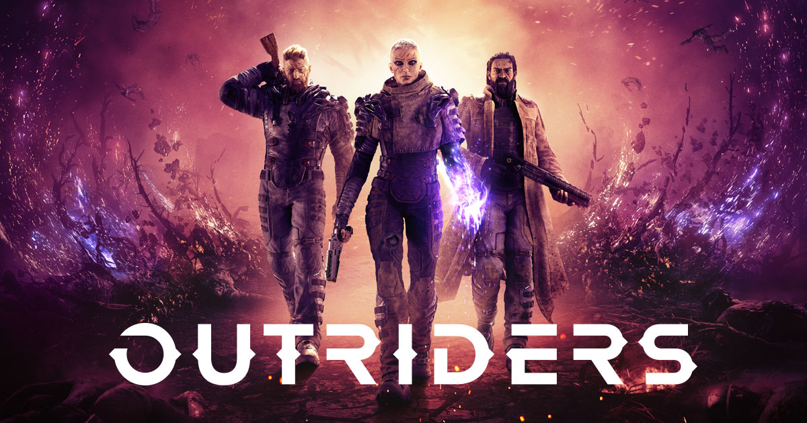
Características de los Shooters
Novedad 1
1. Perspectiva: El jugador puede ver disparos en primera persona más detallados.
2. Realismo: Armas que existen en la realidad o una simulación del daño del personaje más realista.
3. Multijugador: Juegos en equipo, cooperativo y individual.